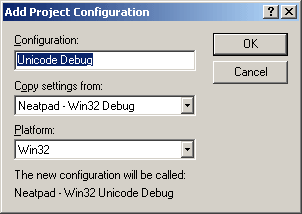

Introduction to Unicode
TextView のユーザーインターフェースが十分に進歩したので、TextDocument に目を向けることができるようになりました。私は今、Neatpad に Unicode を完全にサポートすることに集中しています。Unicodeは非常に複雑な問題なので、一度にすべてに取り組もうとはせず、いくつかのチュートリアルに分けて説明します。
最初のUnicodeトピック（Part 8 - あなたが今読んでいるもの）では、Unicodeと一般的に使用されている様々なエンコーディングスキームについて紹介します。コードのダウンロードはありません。このトピックでは、Unicodeに関する議論を行い、さまざまな問題を理解してもらうことを目的としています。次のUnicodeトピック(パート9)では、ここで説明したコンセプトをNeatpadに組み込む方法を見ていきます。Unicodeに関する残りのトピックは、Unicodeテキストの表示を取り巻く問題に焦点を当てており、複雑なスクリプトのサポート、双方向テキスト、Uniscribe APIなどが含まれます。
Unicode Myths
この記事を読み終える頃には、Unicodeがどのようなものなのかを理解していただけると思いますが、その前に、Unicodeに関する最も一般的な神話を紹介します。
Unicodeについて、最もよく見かける間違った記述はこれです。"Unicodeでは、すべての文字は2バイト長である。"
これは全くの誤りです。Unicode規格では、常に複数の文字のエンコーディング形式が定義されており、元々はUCS-2が最も一般的でした。しかし、Unicode 2.0以降、すべての文字を2バイトで表現できる符号化方式は存在しなくなりました（UTF-16については、このページの下の方にあります）。
また、Microsoft社でさえ、自社のドキュメントの中で、「Unicodeはワイドキャラクタセットである」というような間違った記述をしていることがあります。少なくともWindowsでは、Unicodeの文字列は通常UCS-2/UTF-16でエンコードされますが、Unicodeが「ワイドキャラクタセット」であると主張するのはかなり誤解を招く恐れがあります。
Windowsプログラマが次によく聞く質問は、「UNICODEの文字列をUTF-8の文字列に変換するにはどうしたらいいですか」というものです。これは、Unicodeを理解していない人がよくする質問です。UTF-8の文字列はUnicodeの文字列なので、変換できません。おそらく質問者は、「このUCS-2形式の文字列とUTF-8の間で変換するにはどうしたらいいですか」という意味で質問しているのでしょう。もちろん、この場合の答えはWideCharToMultiByte()のAPIコールになります。
最後の誤解は、wchar_tの「ワイド文字」型は16ビットであるというものです。C言語はwchar_t型の幅についてそのような仮定をしていません。Cコンパイラが1つの「ワイド文字」を表現するために必要とする幅を持つことができますし、UNIXやLinuxではwchar_tは一般的に32ビットの量です。
Code Pages and Character Sets
誰もが知っているASCII文字セットは、7ビットの整数を使って128個のユニークな文字値（0〜127）をエンコードします。また、ANSI文字セットの存在も知っている人は多いと思います。また、ごく少数のヨーロッパ言語を除いて、世界中の文字体系をエンコードするには8ビットバイトでは不十分であることも、ほとんどの人が認識していると言ってよいでしょう。
このような「バイトベース」の文字セットは、しばしば「Single-Byte-Character-Set」（略してSBCS）と呼ばれます。ほとんどの8ビット文字セットは、下位128文字をASCIIのままにして、バイトの上位「半分」に独自の文字を定義しています。シングルバイト文字セットにはたくさんの種類があります。
これらの追加文字セットは、コードページ（IBMの伝統的な用語）と呼ばれ、それぞれがANSI/ISO組織によって定義された固有のコードページ番号によって識別されます。例えば、Windows で使用されている ANSI コードページは 1252 です。Windowsアプリケーションは、コードページ番号を設定することで、どの文字セットで動作させたいかをWindowsに伝えることができます。
もちろん、8ビットの文字だけでは、世界の他の文字体系を表現することはできませんでした。そこで登場したのが、ダブルバイト文字セット（DBCS）です。この文字セットでは、1文字を1バイトまたは2バイトで表現することができます。このような文字セットは他にも多数あり、マイクロソフトではこれらをすべてマルチバイト文字セット（MBCS）と呼んでいます。これらの文字セットに共通しているのは、その複雑さであり、プログラミングの観点からは非常に扱いにくいものとなっています。
CharNext、CharPrev、_mbsinc、_mbsdecなど、MBCS文字列を扱うための多くのAPIやサポートライブラリをご存じかもしれません。これらのAPIはすべて、プログラムがレガシー文字セットを扱うために設計されており、アプリケーションがテキストを正しく表示するためには、正しいコードページが設定されている必要があります。
なお、これらの概念はすべて、今となってはかなり古いものです。SBCS、MBCS、DBCS、そしてコードページという概念はすべて過去のものであり、ありがたいことに私たちはもうそれらを気にする必要はありません。
What is Unicode?
Unicodeには多くの混乱があるようです。これは、Unicodeが1991年に初めてリリースされて以来、大幅に進化していることが主な原因です。この間、Unicodeについて多くの情報が書かれてきましたが、初期の情報の多くは今では不正確なものとなっています。約15年後の現在、Unicodeはバージョン4.1となっていますが、Unicodeに対するあなたの認識は、あなたが最初にこのテーマに触れた時期に応じて最も影響を受けているでしょう。Unicodeの歴史を理解することは、Unicodeそのものを理解することと同じくらい重要です。
Unicodeは、世界の文字体系をコンピュータで表現するための世界共通の文字符号化規格です。また、ISO-10646規格を実用化したものでもあります。Unicodeコンソーシアム（MicrosoftやIBMなどの国際企業が代表）は、ISO-10646と並行してUnicode規格を策定しています。よく、それぞれの規格の用語が混在して使われていることがありますが、実際には同じものを指しています。
Unicodeの主な目的は、現在一般的に使用されているすべての文字を保持する単一のコードページを定義することです。そもそもUnicodeは、ISO-10646で定義されているように、各文字に固有の番号を割り当てる大きなテーブルに過ぎません。Unicodeコードページ内のこれらの番号は、それぞれ「コードポイント」と呼ばれています。以下は、Unicodeコードポイントの例です。
U+0041“Latin Capital Letter A” U+03BE“Greek Small Letter Xi” U+1D176“Musical Symbol End Tie”
標準的な慣習では、「U+」の後にコードポイントの値を表す16進数を書きます。多くの場合、各コードポイントの横には、Unicode規格で定義されているコードポイントの完全な名称を示す説明タグが付いています。
Unicode規格では、100万個強のコードポイントを表現することができます。バージョン4.0では、約96,382文字が実際のコードポイントに割り当てられており、符号化空間の約91%が未割り当てとなっています。世界の文字体系のほとんどがすでに符号化されているので（中国・日本・韓国のガラパゴス文字を含む）、将来の使用のために多くの拡張性が残されています。
このコードポイントは、0x000000から0x10FFFFの間の値をとることができます。Unicodeのコードポイントは、21ビットの整数値で表されます。この数字が選ばれたのは偶然ではありませんし、UTF-16フォーマットを詳しく読めば、Unicodeがこのように制限されている理由がわかるでしょう。なお、UnicodeコンソーシアムとISOは、この範囲を超えて符号化空間を拡張することはないと約束していますので、ご注意ください。
UTF-32 and UCS4
もちろん、21ビットの整数はちょっと変わった大きさの単位なので、コンピュータに保存するには適していません。このため、Unicodeでは、Unicodeのコードポイントのストリームをエンコードするための変換フォーマットをいくつか定義しています。最も一般的なものは、「UTF-8」、「UTF-16」、「UTF-32」の3つです。
これらの3つのうち、圧倒的に扱いやすいのがUTF-32です。各 Unicode 文字を格納するのに、32 ビットの整数がちょうど 1 つ必要です。しかし、UTF-32は非常に無駄が多く、32ビットのうち11ビットは決して使用されません。UTF-32でエンコードされたプレーン・イングリッシュ・テキストの場合、全体で75％の無駄があることになります。下の表は、21ビットの整数（「x」で表される）が32ビットの記憶装置にどのようにエンコードされるかを示しています。
| Unicode | UTF-32 |
| 00000000 - 0010FFFF | 00000000 000xxxxx xxxxxxxx xxxxxxxx |
UNIXなどの一部のOSでは、文字列の処理や保存にUTF-32を内部的に使用しています。しかし、UTF-32はスペース効率が悪いため、テキストファイルの送受信にはほとんど使用されていません。
UCS-2
UCSとは、ISO-10646で定義された用語で、Universal Character Setを意味します。UCSは、ISO-10646で定義された用語で、Universal Character Setの略です。UCS-2は16ビットのコードユニットを用いて各文字を格納・表現します。当時、Unicodeのコードポイントに割り当てられていた文字は55,000文字だけだったので、これは適切な方式だと考えられていました。つまり、（当時の）Unicodeのすべての文字は、1つの16ビット整数で表現できるということです。残念ながら、この信じられないほど短絡的な決定の結果は、今もなお続いています。
Unicodeが開発される以前にも、1文字を格納するのに1バイト以上を必要とする「ワイド文字セット」は数多く存在していた。代表的なものとしては、IBMのDBCS（double-byte-character-set）、JIS-208、SJIS、EUCなどが挙げられます。さまざまなワイド文字セットをサポートするために、80年代後半にC言語の標準にwchar_t型が導入されました（ただし、承認されたのは1995年です）。wchar_t型（および一般的なワイドキャラクタサポート）は、これらのワイドキャラクタセットをサポートするメカニズムを提供しました。
UCS-2フォーマットを支持した企業は、Unicodeのサポートを約束した。特にマイクロソフト社は、Windows NT OSを最初から「ユニコード」対応にして、16ビットのUCS-2ワイド文字列を使って、すべてのテキストを保存・処理した。
UTF-16
1996年にはUnicode 2.0がリリースされ、コードスペースが65,535文字からBMP（Basic Multilingual Plane）に拡張されました。Unicodeのコードスペース全体をエンコードするには、16ビットの整数では不十分であることが明らかになり、UTF-16形式とUTF-16サロゲート・メカニズムが導入されました。重要なのは、UTF-16がUCS-2と下位互換であることです（同じ値を同じようにエンコードします）。
0x10000から0x10FFFFまでの文字を表現するためには、2つの16ビットの値が必要となり、これらをまとめてサロゲートペアと呼びます。これは、16ビット単位とUnicodeの文字との間に1対1の対応関係がなくなったことを意味します。この2つの16ビット値は、サロゲートであることを示すために、慎重にフォーマットする必要があります。
- 最初の16ビットの値は「ハイサロゲート」と呼ばれ、上位6ビット（16ビット中）を「110110」に設定する必要があります。これにより、0xD800から0xDBFFまでの値を格納するための未使用の10ビットが残り、1024文字分の範囲が確保されます。
- 2つ目の16ビットは "low surrogate "と呼ばれ、上位6ビットが "110111 "に設定されています。
このD800からDFFFFまでの「サロゲート範囲」は、以前にUCS-2の「私用領域」と呼ばれていたものの一つから「盗用」されたものです。サロゲートペアを組み合わせると1024×1024の組み合わせとなり、BMPの外側に0x100000（1,048,576）個のコードポイントが追加されることになります。下の表は、UTF-16を使ってUnicodeコードスペースをどのように表現するかを示しています。
| Unicode | UTF-16 |
| 00000000-0000FFFF | xxxxxxxx xxxxxxxx |
| 00010000-0010FFFF | 110110yy yyxxxxxx 110111xx xxxxxxxx |
つまり、本質的には、UTF-16はマルチバイトのUTF-8と同様に可変幅のエンコーディング方式なのです。UTF-16が固定幅のフォーマットでなくなった今、何が有利なのかと（私もそうでしたが）思っているかもしれません。もし最初からUTF-8が使えていたら、今頃UTF-16が使われていたかもしれないと思うと面白いですね。
可変幅の問題を抜きにしても、C/C++の観点からUTF-16を使うのは、奇妙なwchar_t型や、ワイド文字の文字列リテラル用のL""構文のために、かなり面倒です。現時点では、UTF-16が主流のエンコーディング形式であることをご理解ください。Microsoft WindowsもMacintosh OSXもOSにUTF-16を採用していますし、JavaやC#言語もすべての文字列操作にUTF-16を採用しています。UTF-16がすぐになくなることはないでしょう。
実際のところ、UTF-16の可変幅の性質と、それによってもたらされた若干の複雑さは、Unicodeを表示する際の悪夢に比べれば、取るに足らないものです。文字列がマルチバイト形式であることは重要ではありません。UTF-32であっても、1つのコードポイントが必ずしも1つの可視/選択可能な「グリフ」に対応するわけではありません。
UTF-8
非常によく使われているエンコーディング形式に、1993年に公式に発表されたUTF-8があります。よくある誤解として、UTF-8はUTF-16の「劣等生」であるというものがあります。UTF-8は、UTF-16やUTF-32とまったく同じUnicode値をエンコードしますが、その代わりに最大4つの8ビットバイトの可変長シーケンスを使用します。これは、UTF-8が真のマルチバイトフォーマットであることを意味します。インターネット上のテキスト（WebページやXMLなど）の多くは、UTF-8を使って送信されていますし、多くのLinuxやUNIXでは、内部的にUTF-8を使用しています。
UTF-8の仕組みは非常に巧妙です。各バイトのMSB（最上位ビット）は、文字単位が単一の7ビットASCII値であるか（最上位ビットを "0 "に設定）、またはマルチバイトシーケンスの一部であるか（最上位ビットを "1 "に設定）を示すために使用されます。これは、UTF-8が7ビットのASCIIテキストと100％の下位互換性があることを意味しています。もちろん、この目的のために設計されています。この設計により、古い非Unicodeソフトウェアは、ほとんど、あるいは全く変更することなく、Unicodeデータを扱い、処理することができます。
UTF-8テキストには、実は3つの基本構造があります。
- プレーンなASCIIテキスト（0～127の範囲の文字）は、何も手を加えずにそのままの形で表現されます。
- リードバイトは、マルチバイトシーケンスの開始点を示します。リードバイトの先頭にある "1 "ビットの数は、リードバイトを含めたシーケンスのバイト数を表します。つまり、先頭が "110 "のバイトは2バイトのシーケンスを表し、"1110 "のバイトは3バイトのシーケンスを表しています。リードバイトの下部にある残りのビットは、21ビットのUnicode値の最初の部分を格納するために使用されます。
- トレイルバイトの先頭ビットは常に "10 "で、下位6ビットにはUnicode値の残りのビットが格納されます。トレイルバイトは、常にリードバイトの後に続く必要があり、単独で出現することはありません。
そのため、0～127の範囲のUnicodeの値は、そのまま表現されます。この範囲外の値（0x80～0x10FFFF）は、ちょうど1つのリードバイトと1つ以上のトレイルバイトからなるマルチバイトシーケンスを使って表現されます。0x7F以上の値を持つ各Unicode文字は、そのビットがマルチバイト列の「スペア」ビットに分配されます。
次の表は、この考え方を示したものです。
| Unicode | UTF-8 |
| 00000000-0000007F | 0xxxxxxxx |
| 00000080-000007FF | 110xxxxx 10xxxxxx |
| 00000800-0000FFFF | 1110xxxx 10xxxxxx 10xxxxxx |
| 00010000-001FFFFF | 11110xxx 10xxxxxx 10xxxxxx 10xxxxxx |
| 00200000-03FFFFFF* | 111110xx 10xxxxxx 10xxxxxx 10xxxxxx 10xxxxxx |
| 04000000-7FFFFFFF* | 1111110x 10xxxxxx 10xxxxxx 10xxxxxx 10xxxxxx 10xxxxxx |
最後の2行にはアスタリスクが付けられていることに注意してください。これはUTF-8の不正な形式です。UTF-8は理論的にはリードバイトの111110xxと11111110xを使って31ビットの整数を完全にエンコードすることができますが、これらは0～10FFFFのユニコード範囲外の数字を表しているため、オーバーロングシーケンスとなります。この「人工的な」制限は、UTF-16のサロゲートメカニズムのために課せられたものであることを覚えておいてください。
Unicode text files
Windows NTで通常のメモ帳を使ったことがある方は、テキストファイルにはASCII、Unicode（実際にはUTF-16）、Unicode-Big-Endian（ビッグエンディアン-UTF-16）、そして最後のUTF-8といういくつかの形式で保存できることをご存知でしょう。
Windows（およびおそらく他のほとんどのOS）のテキストファイルの問題点は、ファイルに含まれるテキストの種類を知る方法がないことです。なぜなら、プレーンテキストのファイルにはそのような機能がないからです。そこで、Unicode規格では、ファイルの保存に使用されたエンコーディング方式を識別するために、テキストファイルに「バイトオーダーマーク」をタグ付けする方法を定義しています。オプションの「BOM」シーケンスを以下に示します。
| Byte Signature | Unicode Format |
| none | Plain ASCII/ANSI |
EF BB BF |
UTF-8 |
FF FE |
UTF-16, little-endian |
FE FF |
UTF-16, big-endian |
FF FE 00 00 |
UTF-32, little-endian |
00 00 FE FF |
UTF-32, big-endian |
上の表は、Unicode Standard 4.0から引用したものです。BOM値が選択されているのは、プレーンテキスト文書の先頭にこれらの文字列が存在する可能性が極めて低いからです。もちろん、そのようなファイルに出会う可能性はありますが、非常にまれです。
Neatpadでは、署名がない場合、ファイルはプレーンなANSIテキストとして扱われます。これは、メモ帳の動作とは対照的です。メモ帳は、ファイルの統計的な分析を行い、基本的なフォーマットに関して「最善の推測」を行いますが、時にはそれを間違えることもあります。
Relevant reading
最初に始めるべき場所は www.unicode.org/faq です。これは、Unicodeの公式サイトで、Unicode 4.1規格の全文が掲載されています。また、この規格は書籍（ハードカバー）としても販売されています。
しかし、もしUnicodeに関する本当に良い本が欲しいのであれば、Richard Gillamの「Unicode Demystified」をお勧めします。この本は、Unicodeに関する様々な問題を実践的に解説しており、このプロジェクトを進める上で欠かせないものとなりました。
また、以下のリンクも参考になるでしょう。
- WIKI page on Unicode
- UTF16 for processing
- Characters vs Bytes
- Forms of Unicode
- Power user’s guide to multilingual text editors
- A tutorial on character-code issues
- UTF-8 and Unicode FAQ for Unix/Linux
Unicode C++ projects in Windows
Neatpadでは、Unicodeをサポートしたいので、Windows OSが提供するネイティブなUnicodeサポートを使用するのが理にかなっています。実際には、"Wide-character" Unicode API (基本的には UTF-16/UCS-2) を使用することになります。WindowsでUnicode対応のアプリケーションを書くには、プログラマーが知っておくべきテクニックがあります。
- Unicode Windowsプロジェクトを作成する際の最初のステップは、ワイドキャラクタAPIのサポートを有効にすることです。これは通常、プロジェクト内のすべてのソースファイルにUNICODEマクロと_UNICODEマクロを定義することで実現されます（_MBCSや_DBCSなどのマクロは削除します）。2つのマクロが必要な理由は簡単です。UNICODEは、Windows/Platform SDKのライブラリに使用され、_UNICODEは、標準のC/C++ランタイムのライブラリに使用されます。
- 2番目のステップは、#include tchar.hです。このファイルには、Unicodeプロジェクトで非常に有用な多くの「サポートマクロ」が含まれています。
- 3番目のステップは、任意の文字タイプをTCHARとして定義することです。これは別のマクロで、UNICODEプロジェクトではWCHAR文字列タイプ、通常の「非Unicode」プロジェクトではchar文字列タイプになります。
- 次のステップでは、tchar.h で定義されている_Tおよび_TEXTマクロを使って、すべての文字列リテラルを宣言します。これらのマクロは、文字列リテラルの定義方法を制御します。非ユニコードプロジェクトでは、これらのマクロは何もしませんが、ユニコードプロジェクトでは、すべての文字列リテラルにL""という文字列のプレフィックスが付きます。
- 最後のステップは、Cランタイムの文字列関数（strcpyなど）のすべての呼び出しを、 _tcsと同等のもの（_tcscpyなど）に置き換えることです。これらの等価物はすべて tchar.h ランタイムヘッダにありますが、オリジナルから「_t」の名前を得るためには簡単なトリックがあります - 「str」の部分を「_tcs」に置き換えるだけです。
WindowsでのUnicodeプログラミングは、C/C++プリプロセッサのサポートに大きく依存していることがお分かりいただけたと思います。以下の例では、これらの概念をすべてまとめて説明しています。
#include <windows.h>
#include <tchar.h>
TCHAR szFileName[MAX_PATH];
// calling one of the standard-C calls
_tcscpy(szFileName, _T("file.txt"));
// calling one of the Platform-SDK APIs
CreateFile(szFileName, GENERIC_READ, ...);
TCHAR, _tcscpy, _T, CreateFile は MACRO なので、UNICODE を定義するとサンプルプログラムは次のようになります。
WCHAR szFileName[MAX_PATH];
_wcscpy(szFileName, L"file.txt");
CreateFileW(szFileName, ...);
なお、WCHARという文字型は、実際にはwchar_tとして定義されている別のマクロです。Visual-C コンパイラは、このワイド文字タイプを 16 ビットの量として扱います。例えば UNIX システムではネイティブの Unicode フォーマットが UTF-32 であるため、wchar_t は通常 32 ビットの量になります。
UNICODEの設定をしないと、サンプルプログラムは通常のC言語プログラムになります。
char szFileName[MAX_PATH];
strcpy(szFileName, "file.txt");
CreateFileA(szFileName, ...);
すべてのソースファイルの先頭にUNICODEや_UNICODEを置くのではなく、自分たちで簡単にできるようにします。最後にやるべきことは、NeatpadとTextViewのプロジェクトを、プロジェクト全体でUnicodeアプリケーションとしてビルドするように設定することです。既存のプロジェクトを変更するのではなく、2つの新しいプロジェクト構成を追加します（1つはデバッグ用、もう1つはリリース用）。これにより、同じソースコードから、ASCIIのみのNeatpadと、Unicodeのビルドが可能になります。
Select Build -> Configurations menu item from Visual Studio.
">
新しい設定は、既存の非ユニコードプロジェクトをテンプレートとして使用して作成されます。この作業は、Neatpad プロジェクトと TextView プロジェクトの両方について、また、Debug と Release の各ビルドについて行う必要があります。この作業を行うと、各プロジェクトには、Debug、Release、Unicode Debug、Unicode Release の 4 つのプロジェクト構成ができあがります。
Coming up in Part 9
これがUnicodeの入門書として役立つものであれば幸いです。Unicodeは非常に複雑なテーマなので、すぐに飛び込む前に、まず基本的な部分をカバーする必要があると感じました。このシリーズの次のパートでは、ここで紹介したアイデアをNeatpadに直接統合することを考えています。